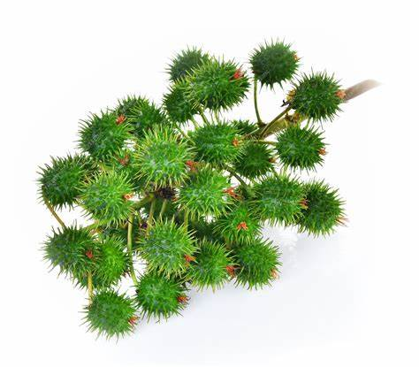

1. Seasons for Growing Castor

Castor is a drought-resistant, warm-season crop that grows well in tropical and subtropical regions. The best seasons for growing Castor are:
- Monsoon: Castor is typically sown during the monsoon season, especially in rain-fed areas.
- Post-Monsoon: In irrigated regions, Castor can be grown during the post-monsoon period for better yield.
- Summer: Castor can also be planted in summer in areas with sufficient irrigation.